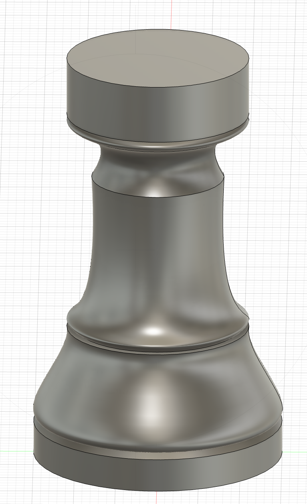
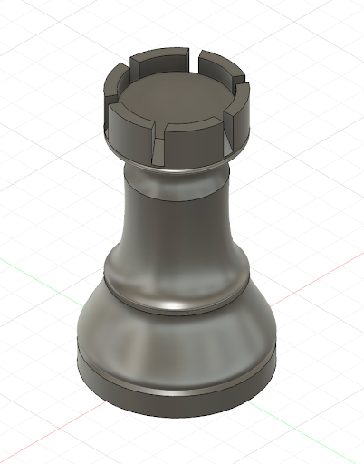
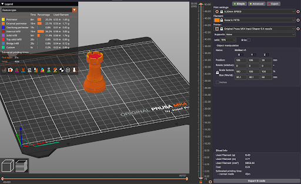
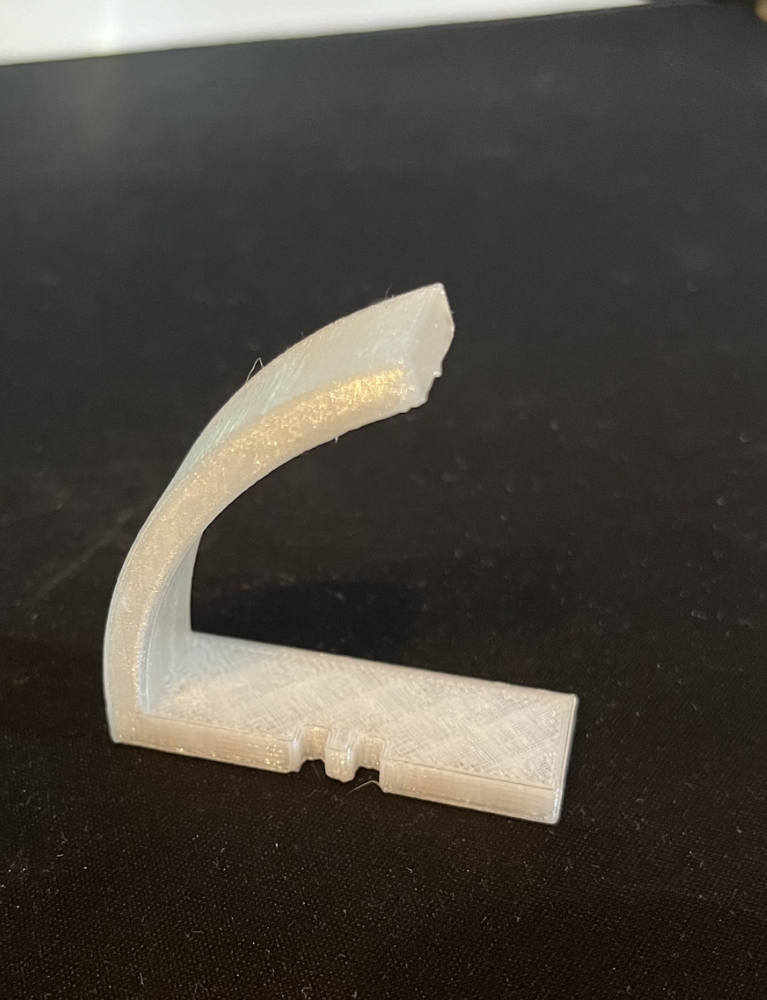
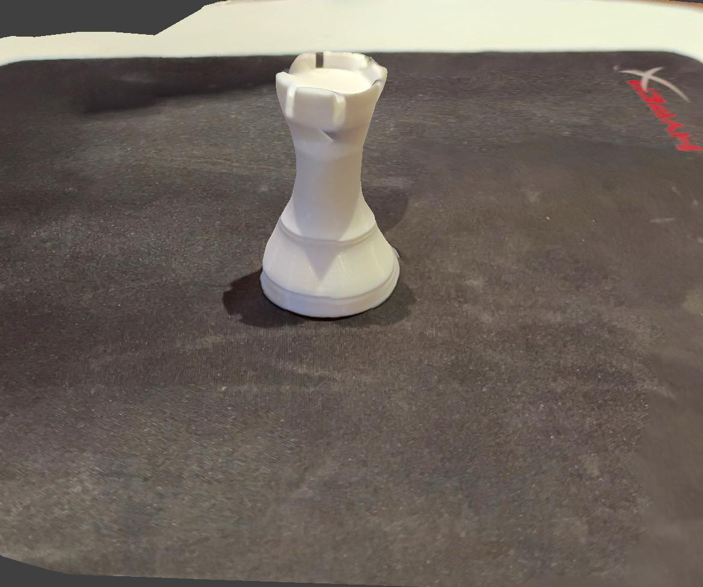

Verkefni 3
3D prentun og skönnun
3D prentun
Hókur
Ég byrjaði á því að hlaða niður autodesk fusion sem ég nota til þess að hanna hlutinn sem ég ætla að prenta út.
Ég ákvað að gera skák hrók og notaði hrók úr skáksetti sem var heima hjá mér til hliðsjónar. Ég byrjaði á því að mæla þvermálið á toppi og botni hróks og einnig hæð. Svo hannaði ég öll smáatriðin á hrók út frá auga.
Hér er mynd af hóknum sem ég notaði fyrir innbálstur


Fyrst hannaði ég vinstrihluta 2D sjónarhorn á hrók, setti svo inn mældar einingar og hannaði svo útlínurnar með þeim skilyrðum.

Svo nota ég revolve takkann til þess að gera hann gegnheilann í kringum Z-ás.
Svo nota ég extrude takkann til þess að skera út hluti eins og toppinn
Og að lokum fékkst tilbúinn hrókur svona:
Svo exportaði ég file-ið sem stl og opnaði það svo í forritinu Prusa slicer, þar þurfti ekkert að gera nema velja infill sem ég valdi 15% og svo export.
Ég exportaði svo file-inu sem G-code sem ég færði svo á kort sem ég tengdi í 3D prentarann. Svo á 3D prentaranum vel ég kóðann og byrja að prenta.
Svo að lokum kom 3D prentaði hrókurinn svona út:
Prófanir
Til að bæta verkefnið ákvað ég að prenta út prufu sem ég hefði átt að framkvæma áður en ég prentaði út hrókinn. En það sem ég prófaði var hvort hallinn á hálsinum á hrókinum væri of mikill og einnig hvort tennurnar ofan á hrókinum væru með of lítið bil á milli hvor annarri. Eins og má sjá á myndinni fyrir neðan þá er bilið á tönnunum ofan á hrókinum 2mm.


Svo má sjá einnig að hallinn hálsinum á hróknum er 180 - 112,2 = 67,8 gráður:


Þannig ég hannaði prufu sem myndi bæði halla jafn mikið og hrókurinn og hafa einnig jafn smá bil og tennurnar eins og má sjá á myndunum hér fyrir neðan


Eins og má sjá á myndinni fyrir neðan kom var lokaniðurstaðan nógu góð til þess að framkvæma 3D prentunina á hróknum þ.e.a.s ef ég hefði ekki verið búinn að því nú þegar.
3D skönnun
Ég byraði á því að fara inn á appstore og downloada appi sem heitir Scaniverse.
Svo fann ég mér hlut til þess að skanna og byrjaði á því að skanna Hrókinn sem ég 3D prentaði rétt áður.
Það eina sem ég þurfti svo að gera var að smella á new scan, svo small object og svo á record. benda myndavélinni á hlutinn með sem mörgum sjónarhornum og ég gæti.
Svona kom fyrsta tilraunin út
En hún kom ekki eins vel út og mig langaði þannig ég reyndi aftur nema í þetta skipti skannaði ég plöntu sem er jú aðeins stærri, en í þetta skipti fór ég mun hægar í kringum hlutinn.
Eins og má sjá á myndunum fyrir ofan þá kom þetta mun betur út þar sem ég fór hægar í kringum hlutinn og svo ég einnig líka stöðugri á myndavélinni í þetta sinn.
Tímatafla
| Verkþættir | Tími(Klukkutímar) |
|---|---|
| Undirbúningur | 1 |
| Fusion vinna | 8 |
| 3D prentun | 2 |
| 3D skönnun | 1 |
| Vefsíðugerð | 6 |
| Heildartími | 18 |